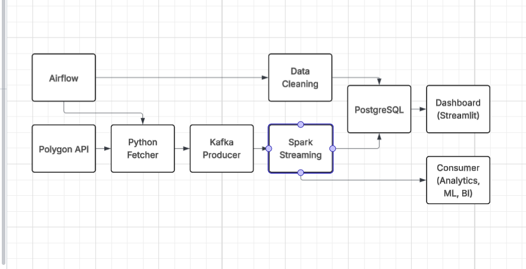
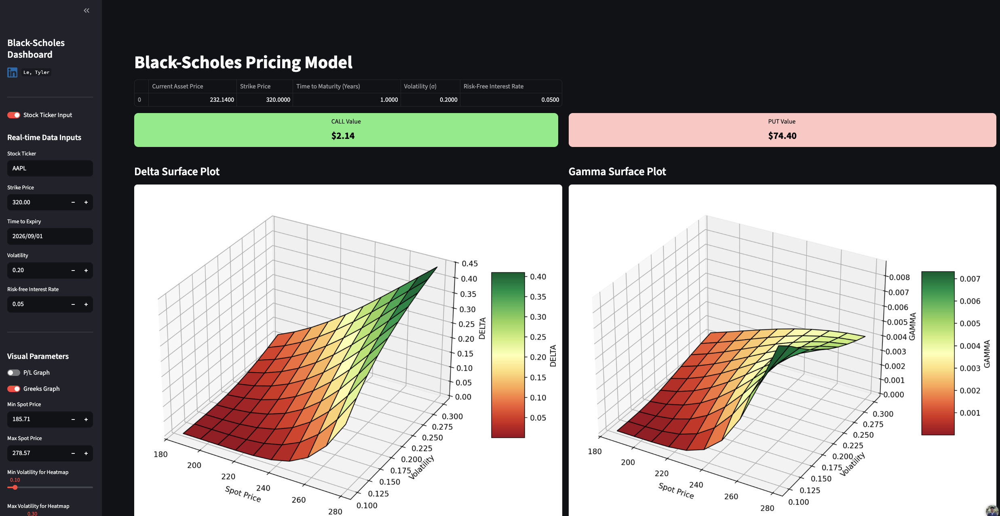
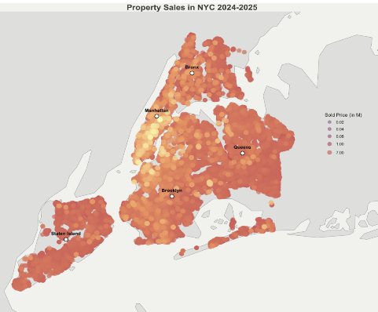

Tyler Le
first-generation student
passionate about
building community
& software
Third-year Data Science undergraduate @ UF
Undergraduate Research Assistant @
Gator Glaciology Lab
Campus Ambassador @
Perplexity Comet
Previous Data Analyst @
Blockchain Association Singapore
I have worked with

My Projects

A financial data pipeline that fetches real-time OHLC (Open, High, Low, Close) data from Polygon.io API, processes it through Apache Kafka and Apache Spark for advanced anomaly detection, and provides actionable insights through a real-time dashboard.
The entire system is containerized using Docker and orchestrated with Apache Airflow.
Airflow
PostgreSQL
Kafka
Spark
Docker

An interactive Streamlit dashboard that visualizes European call and put option prices under the Black-Scholes model.
Users can tweak key inputs (spot price, strike, volatility, risk-free rate, time to maturity) and immediately see pricing heatmaps and P/L surfaces
Python OOP
RestAPI
Streamlit

This analysis investigates New York City property sales from May 2024 to April 2025 by cleaning, merging, and geocoding official city sales data.
Using exploratory visualizations like waffle charts, heatmaps, and spatial density maps, the paper illustrates key trends in property transactions and prices across the five boroughs.
The findings reveal distinct patterns in the types of residential buildings sold per borough and highlight significant variations in sale prices and transaction density, especially in Manhattan.
R
ggplot2
tidyr
dplyr
We scraped real-time data from Basketball-Reference.com, processed and cleaned it, and built both a statistical regression model and a user-friendly GUI to:
1. predict potential future MVPs based on their performance
2. Analyze which stats are most significant for MVP selection
3. Compare player-to-player performance and efficiency
1. predict potential future MVPs based on their performance
2. Analyze which stats are most significant for MVP selection
3. Compare player-to-player performance and efficiency
Python
BeautifulSoup
pandas